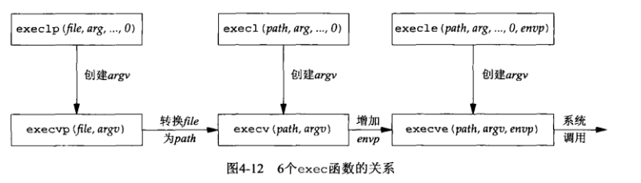
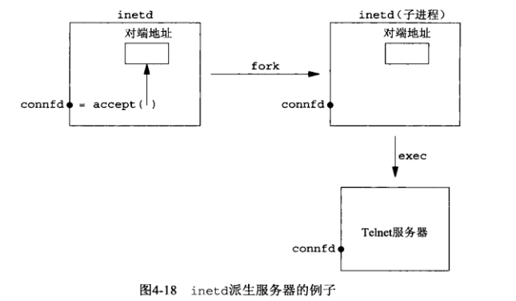

UNIX网络编程（四）
socket函数
调用socket函数，指定期望的通信协议类型
1 | |
-
family是协议族/协议域
family 说明 AF_INET IPv4协议 AF_INET6 IPv6协议 AF_LOCAL Unix域协议 AF_ROUTE 路由套接字 AF_KEY 密钥套接字 -
type是套接字类型
type 说明 SOCK_STREAM 字节流套接字 SOCK_DGRAM 数据报套接字 SOCK_SEQPACKET 有序分组套接字 SOCK_RAW 原始套接字 -
protocol是某个协议的常值
protocol 说明 IPPROTO_CP TCP传输协议 IPPROTO_UDP UDP传输协议 IPPROTO_SCTP SCTP传输协议
connect函数
TCP客户用connect函数来建立与TCP服务器的连接：
1 | |
- sockfd是由socket函数返回地套接字描述符
- 指向地址结构的指针
- 结构的大小
bind函数
bind函数把一个本地协议地址赋予一个套接字。
1 | |
进程可以指定一个IP地址，也可以指定一个端口号，可以都指定，也可以都不指定。
若指定端口号为0，则内核在bind被调用时选择一个临时端口；
若IP地址为通配地址，那么内核将等到套接字已连接（TCP）或已在套接字上发出数据报（UDP）时才选择一个本地IP地址。
通配地址的表示方法：
1 | |
litsen函数
结合UNIX网络编程（二）中的图2-4来理解
socket函数创建一个套接字时，它被假设为一个主动套接字，可以使用connect发起连接。listen函数是把未连接的套接字转换为一个被动套接字。CLOSED状态转换为LISTEN状态。
1 | |
- 未完成连接队列：每个SYN分节对应其中一项。SYN_RCVD状态
- 已完成连接队列：每个已完成TCP握手状态的客户对应其中一项。ESTABLISHED状态
通过环境变量来指定backlog值得listen包裹函数：
1 | |
accept函数
有TCP服务器调用，用于从已完成连接队列头返回下一个已完成连接。如果已完成连接队列为空，那么进程投入睡眠状态（套接字阻塞方式）
1 | |
如果accept成功，那么其返回值是由内核自动生成得一个全新描述符。代表与所有返回客户得TCP来连接。
即，该函数返回三个值：
- 一个既可能是新套接字描述符也可能是出错指示的整数
- cliaddr所指的客户进程的协议地址
- addrlen所指的该地址的大小
如果对于客户协议地址不感兴趣，可以把后两个参数都设为空指针。
小练习
使用两个客户端分别连接127.0.0.1 和192.168.1.128
1 | |
1 | |
fork和exec函数
fork是Unix派生新进程的唯一方法
1 | |
fork的特点是只调用一次，却返回两次：
- 父进程返回的是子进程的ID，需要记录下来（因为没有其他办法获取子进程ID）
- 子进程返回的是0，可以通过getppid获取父进程ID
几个exec函数：
1 | |
他们的区别在于：
（a）待执行的程序文件是由文件名还是由路径名指定
（b）新程序的参数是一一列出还是由一个指针数组来引用
（c）把调用进程的环境传递给新程序还是给新程序指定新的环境
综合上述两个函数，由两种fork的用法：
- 一个进程创建一个自身的副本，这样每个副本可以同时处理各自的操作（网络服务器的典型做法）
- 一个进程想要执行另一个程序。先fork出一个自身的副本，再让其中一个副本调用exec把自身替换成新的程序。（shell之类程序的典型用法）
并发服务器
仔细看daytimetcpsrv1.c的代码，会发现服务器每次执行完一个请求，才会处理下一个，称为迭代服务器。对于时间获取而言，时间足够短迭代服务器也就足够了。但是对于任务量比较大的情况，可以实现并发服务器，下面给出基本结构：
1 | |
我们知道，调用close的时候会发送一个FIN，为什么父进程close后没有终止子进程与客户之间的连接呢？
答：每个文件或套接字都有一个引用计数。只有当引用计数为0的时候，才会发生清理和资源释放。
close函数
用于关闭套接字，并终止TCP连接。
1 | |
如果确实想要在某个TCP连接上发送一个FIN，那么可以使用shtdown函数替换close函数。
getsockname和getpeername函数
getsockname：返回与某个套接字关联的本地协议地址
getpeername：返回与某个套接字关联的外地协议地址（对端）
1 | |
这两个函数的最后一个参数都是值-结果参数。
为什么需要这两个函数呢？
-
TCP客户没有使用bind函数，那么connect成功返回后，getsockname可用于返回内核所选择赋予的本地IP地址和本地端口号
-
在以端口号0调用bind后，getsockname用于返回由内核赋予的本地端口号
-
getsockname还可用于获取某个套接字的地址族
-
在一个以通配IP地址调用bind的TCP服务器上，与某个客户一旦建立连接，getsockname可用于返回内核赋予的本地IP地址
-
当一个服务器是由调用accept的某个进程通过调用exec执行程序时，它能够获取客户身份的唯一途径时调用getpeername

小练习，获取套接字的地址族
1 | |
参考资料
[1] https://segmentfault.com/a/1190000019252960
[2]《UNIX网络编程卷1》